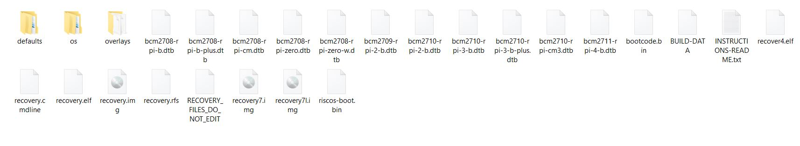
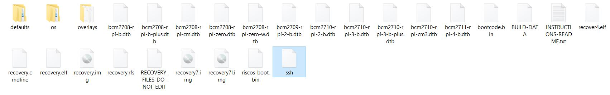

In this article let's do a quick headless setup of Raspberry Pi 4 using SSH over Wi-Fi.
Note: Since I purchased Raspberry Pi from PiBox India (Raspberry Pi 4 4GB: https://amzn.to/3hyiEvd ), I received a 16GB SD Card with pre-installed OS
Anyhow you can use this link to begin it from scratch i.e. Downloading the image file and burning the image to SD Card and continue from here to enable SSH
Here is a image of the files available in the SD card
Now let's add an empty file named ssh {Do not add any extension}. To do this, right-click in an empty space and click New -> Text Document
Name the empty file as "ssh"
Now Let's add another file name wpa_supplicant.conf. And the content to that file is as below:
ctrl_interface=DIR=/var/run/wpa_supplicant GROUP=netdev
update_config=1
country=IN
network={
ssid="Use your SSID (Network name)"
psk="Password (********)"
}
This above code is from https://www.raspberrypi.org/documentation/configuration/wireless/headless.md. See Wikipedia for a list of 2 letter ISO 3166-1 country codes.
Insert the SD card to Raspberry Pi. Power up the Pi4 using a USB-C cable.
To access the Raspberry Pi, we need to download Putty. If you have Putty, you can skip the below steps.
Let's access the Raspberry Pi4 using Putty.
The Raspberry Pi is now accessible over Wi-Fi.
Let's do a quick update:
sudo apt-get update -y sudo apt-get upgrade -y
Reference: https://www.raspberrypi.org/documentation/configuration/wireless/headless.md